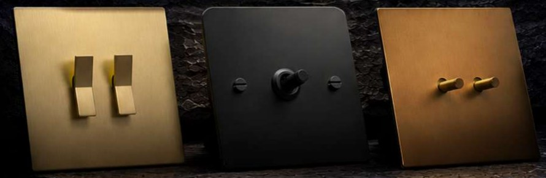

Toggle
Tuas silinder polos yang rata dan bersih, tanpa tekstur. Tarik ke bawah untuk on, dorong ke atas untuk off.
Plat 3 mm · 1 sampai 4 gang · tersedia Schuko dan soket universal dengan USB A + C
Gang
Finish
Brush Gold